Die Region entdecken
La Villana liegt am Rand des Staatswalds, 5 Gehminuten vom Atlantik, zwischen Saint-Hilaire-de-Riez und Saint-Gilles-Croix-de-Vie – einem der abwechslungsreichsten Abschnitte der Vendée-Küste mit feinen Sandstränden, Felsküsten und Marschland. Die meisten Links unten führen zu offiziellen Tourismus-Websites auf Französisch.
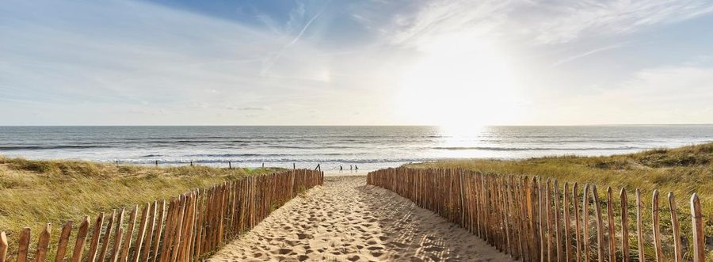
Strände und Badeorte
140 km feiner Sand und 18 anerkannte Badeorte entlang der Vendée-Küste.
Mehr erfahren →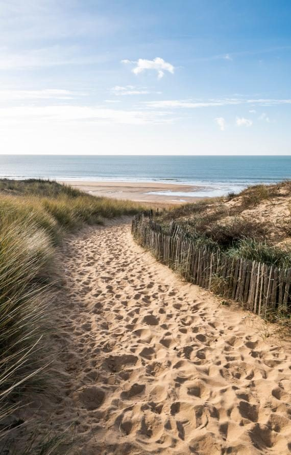
Die 20 schönsten Strände der Vendée
Das Ranking der schönsten Strände des Départements von Vendée Tourisme.
Zum Ranking →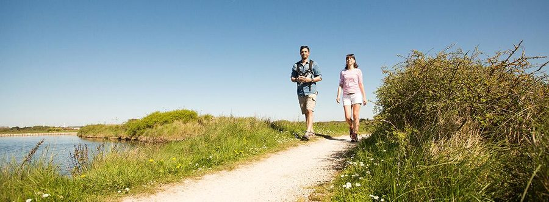
Natur & Erholung in der Vendée
Wälder, Marschland und Wege, um die Vendée zu Fuß oder mit dem Rad zu erkunden.
Mehr erfahren →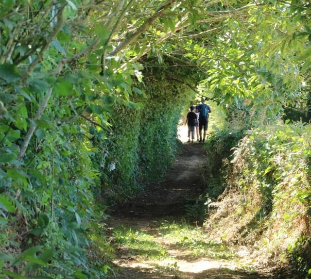
Kalender der Wanderungen
Alle organisierten Wanderungen in der Vendée, Woche für Woche.
Zum Kalender →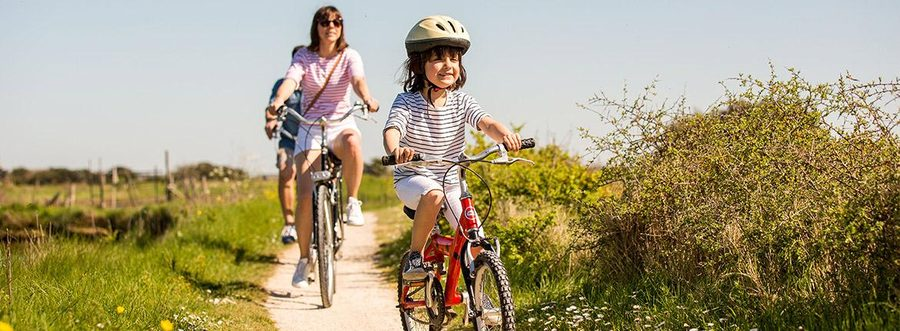
Kalender der Rad- und Mountainbiketouren
Geplante Rad- und Mountainbiketouren im Département.
Zum Kalender →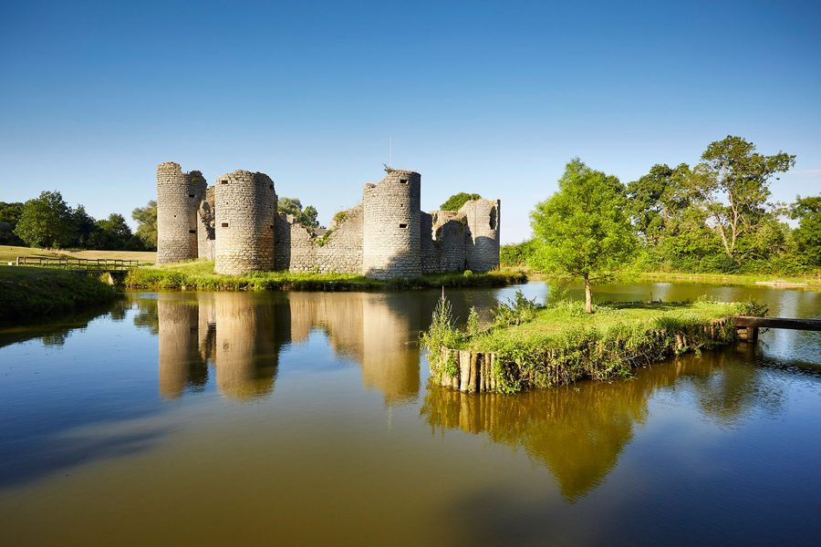
Kultur & Kulturerbe
Schlösser, Museen und historische Stätten in der ganzen Vendée.
Mehr erfahren →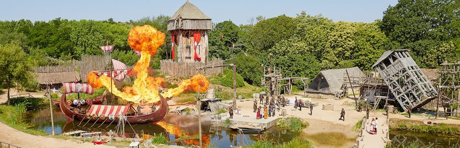
Puy du Fou
Der Freizeitpark mit historischen Shows, einer der meistbesuchten Europas.
Mehr erfahren →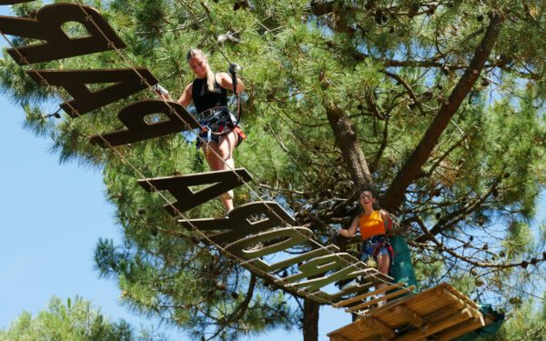
Freizeit & Ausflüge
Freizeitparks, Aktivitäten und Familienausflüge in der ganzen Vendée.
Mehr erfahren →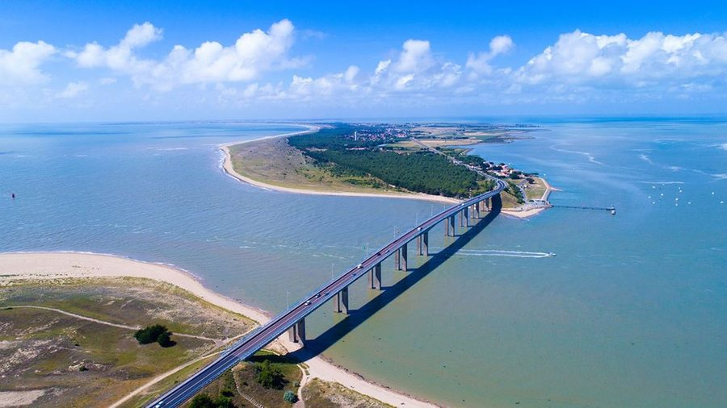
Die Inseln (Noirmoutier, Yeu)
Zwei Vendée-Inseln mit ganz unterschiedlichem Charakter, weniger als eine Autostunde entfernt.
Mehr erfahren →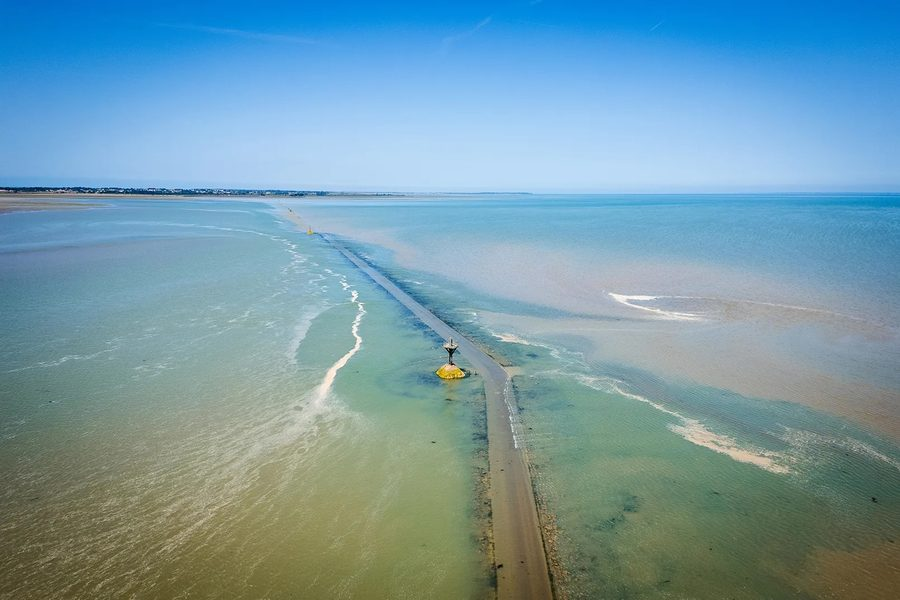
Die Passage du Gois
Die legendäre Gezeitenstraße, die Noirmoutier bei Ebbe mit dem Festland verbindet.
Mehr erfahren →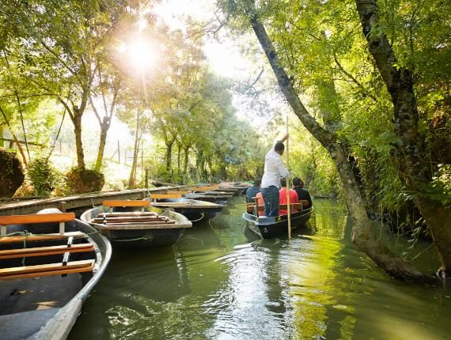
Das Marais Poitevin
Das „Grüne Venedig“: Bootsfahrten auf den Kanälen.
Mehr erfahren →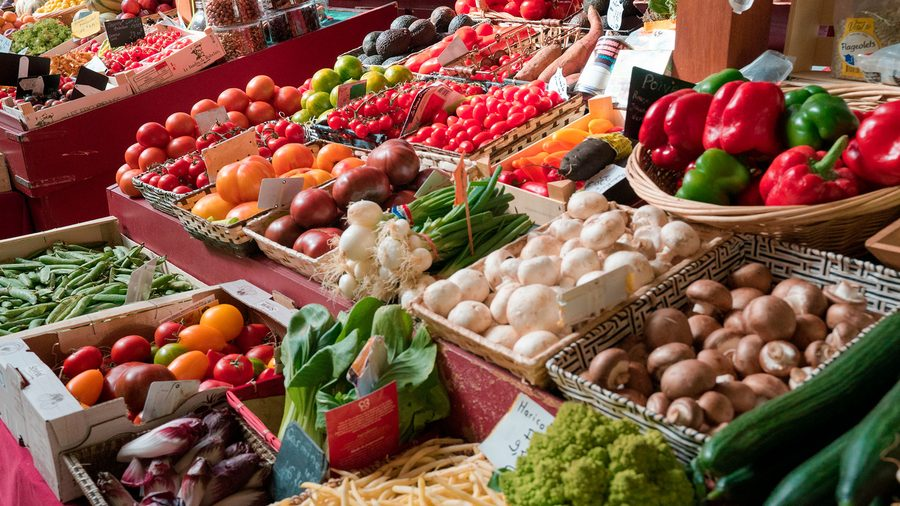
Kulinarik & regionale Produkte
Vendée-Brioche, Mogette-Bohnen, Préfou-Knoblauchbrot… regionale Spezialitäten und gute Adressen.
Mehr erfahren →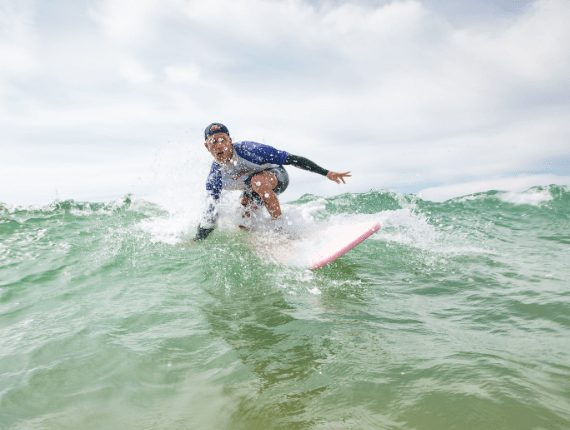
Wassersport in der Vendée
Surfen, Segeln, Kajak, Stand-up-Paddling: alle Wassersportarten entlang der Küste.
Mehr erfahren →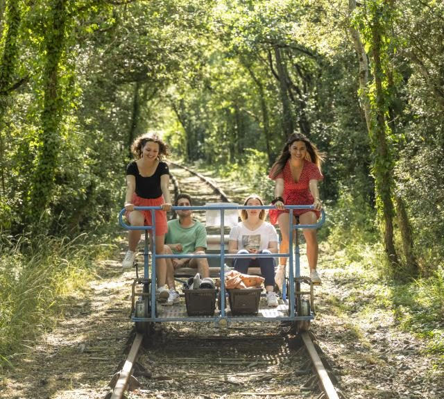
Ausgefallene Orte in der Vendée
Orte abseits ausgetretener Pfade – für etwas Abwechslung.
Mehr erfahren →Tourismusbüro Pays de Saint-Gilles-Croix-de-Vie
Aktuelle Veranstaltungen, Aktivitäten und gute Adressen in der ganzen Gegend.
payssaintgilles-tourisme.fr →Stadt Saint-Hilaire-de-Riez
Praktische Informationen und Neuigkeiten aus der Gemeinde, in der La Villana liegt.
sainthilairederiez.fr →Wir helfen gerne weiter
Ob Sie einen Urlaub oder eine berufliche Veranstaltung planen.